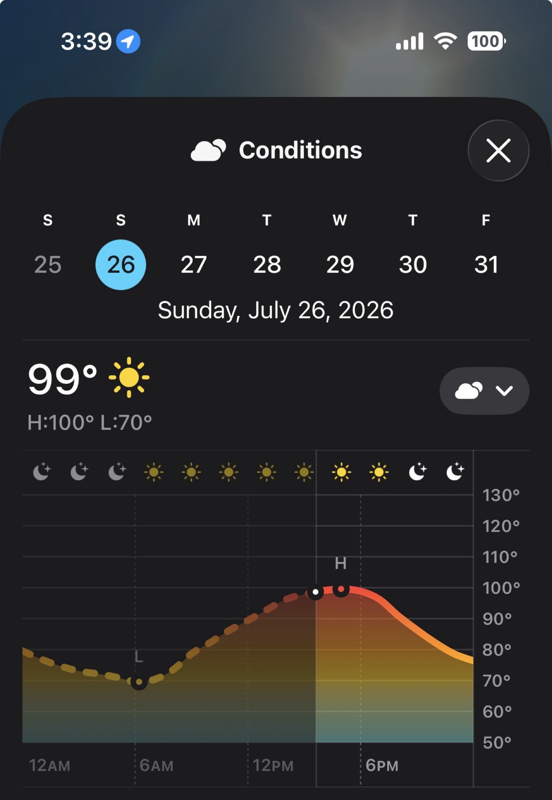
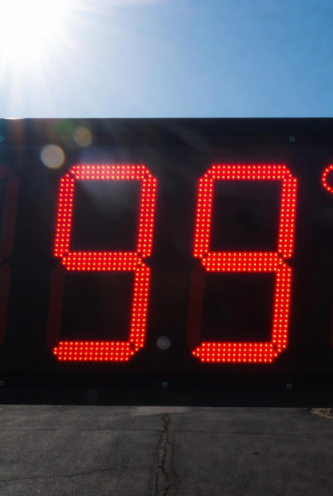
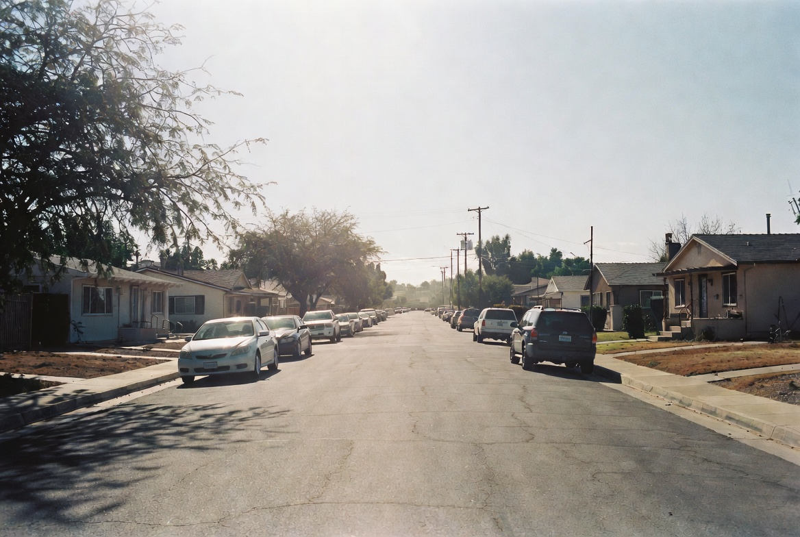
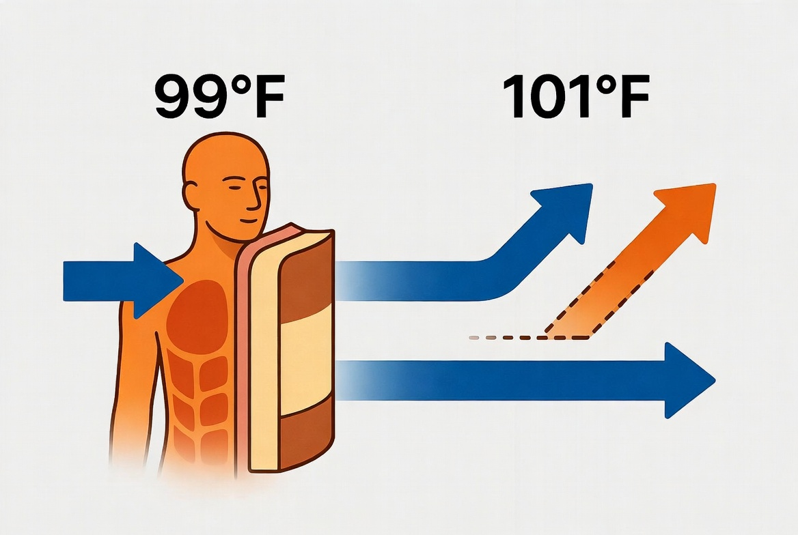
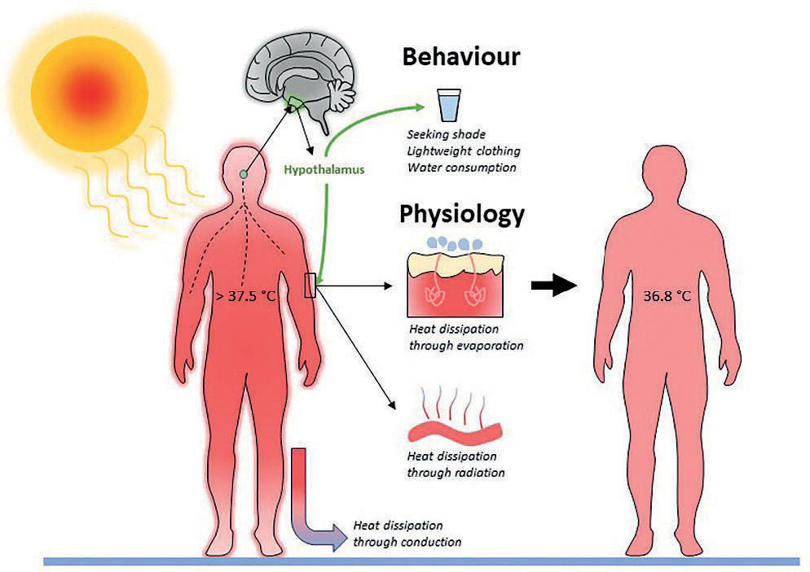
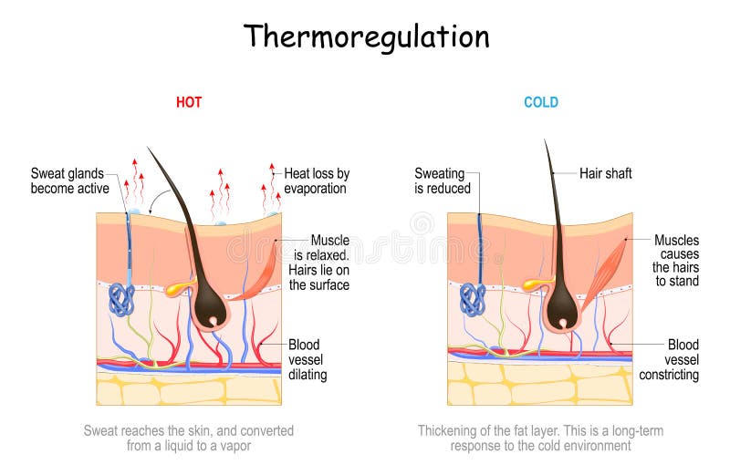

What Is a Hot Shelf?
A “hot shelf” is the plateau of peak daytime temperature — the hours when the mercury stops climbing and simply sits. On many Fresno summer days that shelf lands between 98° and 105°. Locals learn to watch it the way coastal people watch the tide.
Today the shelf is sitting at 99°. The forecast high was 100°. The difference between a 99° shelf and a 101° shelf is small on paper and large in the body.

Dry Heat Changes the Rules
Fresno’s summer heat is characteristically dry. Relative humidity often sits well below 30 percent during the afternoon peak. That dryness is a physiological gift: sweat evaporates efficiently and carries heat away from the skin.
Once air temperature exceeds typical skin temperature (roughly 91–95 °F), the body can no longer lose heat by simple convection or radiation. Evaporation becomes the only reliable cooling mechanism. In dry air that mechanism still works. In humid air it can fail.
Both 99° and 101° sit above skin temperature. The cooling system is already fully engaged. The extra two degrees simply raise the rate at which the environment pushes heat back into the body.

Why Two Degrees Matter
Three measurable effects appear when ambient temperature climbs from 99° to 101° in dry conditions:
1. Increased environmental heat gain
The temperature gradient driving convective and radiative heat into the body steepens. More heat arrives per minute; the sweat system must work harder simply to hold core temperature steady.
2. Higher required sweat rate
Whole-body sweat rate tracks the evaporative heat loss that is required. A two-degree rise can push fluid loss 10–20 % higher over the same outdoor interval, accelerating dehydration risk if intake does not keep pace.
3. Elevated cardiovascular load
More blood is redirected to the skin for cooling. Heart rate rises and cardiac workload increases. Laboratory heat-exposure studies consistently show measurable heart-rate elevation with each additional degree of core or ambient heat stress.
The result is earlier fatigue, greater perceived effort for the same activity, and a narrower margin before heat exhaustion symptoms appear.



Local Context: Tower District Reality
Fresno County Public Health treats sustained temperatures above 90 °F as elevated risk and activates formal cooling centers when the forecast high reaches 105 °F. Many residents, especially those without robust air conditioning, already treat anything above 98–100 ° as a day that requires deliberate planning: shade, timed outdoor tasks, aggressive hydration, and reduced physical load.
Farmworkers and outdoor laborers face the sharpest edge of these differences. A 101° shelf versus a 99° shelf changes how long a person can remain productive before symptoms of heat stress appear. The same arithmetic applies to anyone walking, gardening, or simply waiting for a bus under full sun.
The psychological line at 100 ° also matters. Crossing into triple digits shifts public behavior more than the physical gradient alone would predict. A 99° day still feels like “hot but manageable.” A 101° day registers as an event.
Practical takeaway for today
A 99° shelf still allows more outdoor margin than a 101° shelf. Hydrate before thirst appears, limit peak-hour exposure, and treat any early signs of heavy fatigue, headache, or nausea as signals to cool down immediately. Dry heat is more forgiving than humid heat, but it is not free.
Stay oriented. Stay cool.
High Tower District Stories tracks the conditions that shape daily life in Fresno’s Tower District — heat, safety, community practicalities.
More Stories →Verified Sources
- • Kenny, G.P. et al. Meta-analysis of heat-induced changes in cardiac function (Nature Communications, 2025). Heart rate rises ~26 bpm per 1 °C core temperature increase in climate-chamber studies.
- • American Physiological Society / Pharmacy Times (2026). Cardiovascular strain thresholds in hot-dry environments during minimal activity and slow walking.
- • Cramer, M.N. & Jay, O. Human temperature regulation under heat stress (PMC, 2022). Required evaporative heat loss and whole-body sweat rate scale directly with ambient temperature above skin temperature.
- • Fresno County Department of Public Health — Extreme Heat guidance. Cooling centers activated at forecast highs of 105 °F and above.
- • National Weather Service / local observations for July 26, 2026 conditions in the Fresno area.